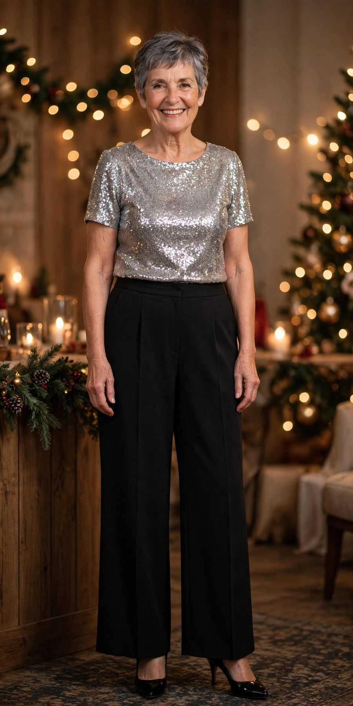
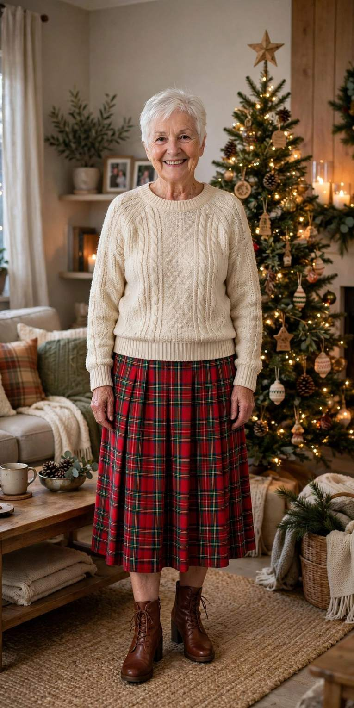
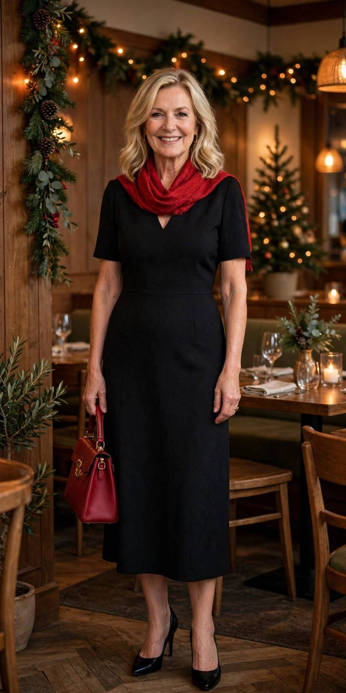
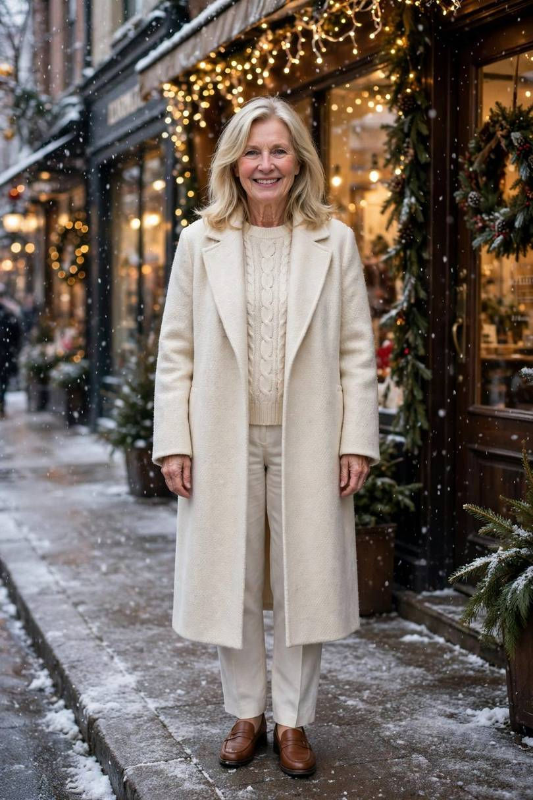

Christmas Outfits for Women Over 50: 12 Classy, Tummy-Friendly Looks

Christmas dressing after 50 has one rule that matters more than all the sparkle in the shops: you should be able to eat Christmas dinner in it. So many festive outfits are cut for standing still in a photograph — tight waistbands, clingy fabrics, dresses that punish a second helping. The 12 christmas outfits for women over 50 below are built the other way: classy first, festive always, and tummy-friendly by design, with wrap fronts, fluid fabrics and waistbands that forgive.
Whether your December means a dressy party, a family day at home, church, or a holiday lunch with friends, there is a formula here that uses pieces you mostly already own — a black dress, dark jeans, a good knit — plus one festive hero piece. Every outfit works at 50, 60 and beyond, and every one photographs beautifully, because Christmas is the most photographed week of the year.
1. The Red Wrap Dress
The red wrap dress is the undisputed queen of christmas outfits for women over 50. The wrap front ties where you place it — high, at your narrowest point — and drapes diagonally across the tummy, which is the single most flattering line a dress can draw. Red near the face makes every skin tone look lit from within, and gold jewelry finishes it without effort. Choose a midi length and a fabric with some weight so the skirt moves rather than clings. This is the outfit for the party, the photos, and every year after — a true red wrap dress never dates.
2. Burgundy Velvet Blazer + Black Trousers
If dresses are not your thing, velvet trousers-and-a-blazer is your party uniform. A burgundy velvet blazer over a simple black camisole and straight black trousers reads as dressed-up from across the room, while the open blazer front creates two slimming vertical lines and the trousers keep everything easy. Velvet is the most forgiving festive fabric there is: it absorbs light instead of reflecting it off every curve, and it feels like wearing a hug. Perfect for holiday dinners, concerts and office parties.
3. Christmas With Jeans: Red Knit + Black Blazer
Some of the best-searched christmas outfits are the ones with jeans — because most real Christmases happen at home. Dark straight-leg jeans (no fading, no rips) with a fine red knit and a black blazer is the formula: the jeans keep it comfortable, the red makes it Christmas, and the blazer makes it an outfit instead of a jumper-and-jeans accident. Red flats or a red lip tie it together. This is the look for hosting, for family photos by the tree, and for the long, lovely, seated afternoon that follows lunch.
4. Sequin Top + Wide-Leg Black Trousers

Yes, you can wear sequins after 60 — the trick is placement and proportion. A sequin top worn loose over fluid wide-leg black trousers puts all the sparkle up top where the light and the cameras are, while the trousers move like a skirt and skim everything below. Keep the top untucked or half-tucked at the side so it floats past the tummy, choose matte sequins in silver, pewter or soft gold rather than mirror-bright ones, and skip the necklace — the top is the jewelry. The most glamorous outfit on this list, and one of the most comfortable.
5. Emerald Velvet Dress + Knee-High Boots
Emerald is red's elegant sister — just as festive, a little more unexpected, and velvet in this deep green looks expensive at any price. A wrap or faux-wrap velvet dress with knee-high boots is a complete outfit in two pieces: no waistband battles, no gaps of cold leg, and a silhouette that flows straight past the middle. This is the christmas outfit for women over 50 who want to be the best-dressed person at the table without looking like they tried. It also works beautifully for winter weddings and New Year.
6. Plaid Midi Skirt + Cream Knit

For the cosy family Christmas, nothing beats a plaid midi skirt with a soft cream knit. The skirt's A-line shape is the most tummy-friendly silhouette in existence — it defines the waist and then simply leaves the body alone — and plaid in red and green is Christmas without a single novelty motif. Half-tuck the sweater at the front to show the waistband line, add ankle boots, and you have the outfit for Christmas morning, the long lunch, and the board games after. It is also the most re-wearable festive outfit here: the skirt works with black all winter.
7. Little Black Dress + Red Accessories

The black dress already in your wardrobe becomes a christmas outfit with exactly three additions: something red, something shiny, and a heel you can walk in. A red scarf at the neck, a red bag, and gold or pearl earrings turn a plain black midi into a deliberate festive look — and black remains the kindest colour to a tummy ever made. Choose a dress with a defined shoulder and a skirt that skims; if your black dress is sleeveless, a fine black cardigan or a velvet jacket over it keeps arms comfortable and the line clean. The smartest outfit on the list, because it costs almost nothing.
8. Gold Pleated Skirt + Black Knit
A metallic pleated midi skirt is the hardest-working party piece a woman over 50 can own this season. The pleats move and catch the light as you walk, the elastic-back waist (choose one) is secretly comfortable, and a simple black fine-knit sweater on top keeps the whole thing classy rather than costume. The black top also does quiet slimming work while the skirt celebrates. Wear it to the party, then wear the skirt again on New Year's Eve with the sequin top from outfit 4 — two hero pieces, four outfits.
9. The Chic Christmas Sweater + Dark Jeans
The christmas sweater outfit has grown up. A Fair Isle or tasteful festive knit in red, cream or forest — fitted at the shoulder, skimming (not squeezing) the body — with dark jeans and ankle boots is joyful without being a joke. The rules: the pattern should sit across the chest and shoulders, the hem should end at the high hip or be half-tucked, and everything else stays plain. Save the flashing-lights novelty jumper for the grandchildren; this version gets you in the family photo looking like yourself on your best day.
10. Burgundy Sweater Dress + Knee-High Boots
For church, carol services and Christmas Day itself, the burgundy sweater dress is the answer women over 60 reach for year after year. A firm ribbed knit holds its shape and floats past the tummy, the deep wine colour is festive without shouting, and knee-high boots make it warm and polished in one move. Add a long pendant to draw a vertical line down the front. It is a one-piece outfit that looks like you planned it for weeks — and it is as comfortable as the pyjamas you will change into at 9pm.
11. Winter White: Cream Coat + Ivory Column

The most classy christmas outfit of all contains no red, no green and no sparkle: head-to-toe winter white. A cream knit and ivory trousers under a long cream coat creates one unbroken, lengthening column, and in a crowd of red and black it is the outfit everyone remembers. The tummy simply disappears into the line. Add tan or gold accessories for warmth. This is the look for Christmas shopping days, winter lunches and any moment you want elegance to do the talking — and every piece rewears all winter with your capsule wardrobe.
12. Faux-Fur Coat Over a Party Dress
Every dressy December evening deserves a grand entrance, and a faux-fur coat worn open over a party dress is exactly that. The coat's soft volume sits on the shoulders and falls straight, the dress underneath stays simple and dark with a little sparkle, and the contrast does all the styling. Faux fur is having a major fashion moment this season, and worn long and open — never belted tight — it is deeply tummy-friendly. Arrive in it, check it, and let the dress have the evening; you have already made the impression.
Final Thoughts
Christmas style after 50 is not about out-sparkling anyone. It is about a wrap line that flatters, a fabric that forgives Christmas dinner, and one festive hero piece worn with confidence. Pick the outfit above that matches your December — dressy party, family day, church or hosting — and let the rest be easy. You have hosted, cooked, wrapped and organised the season for everyone else for decades; this year, dress like the guest of honour. You are.
Next, read: 15 Winter Outfits for Women Over 50: Warm, Chic and Never Bulky and Winter Capsule Wardrobe for Women Over 50: 12 Pieces = 15 Outfits. And if you have not yet, join the free email list on our homepage for the printable Tummy-Friendly Capsule Checklist.